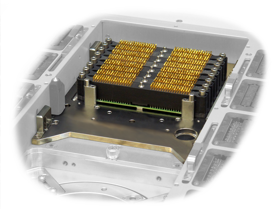

Electrical design rules - MUX cards
MUX cards are a family of cards that are installed in the central area of the DUT interface between the pogo block groups. The cards add functionalities like multiplexers to the DUT board. MUX cards are supplied and controlled via the DUT board. A pogo pin interface connects the cards via interposer modules to the DUT board.
| Supported V93000 systems : Pin Scale, HSM |

Functional changes
- Introduced in SmarTest 7.3.2 / 8.1.2